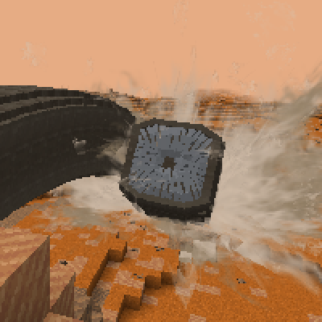

Extraterrestrial Fauna
Extraterrestrial Fauna
Extraterrestrial Fauna
Space is home to many other kinds of animals than those you'd find on Earth. A few animals are hostile and will attack the player, but most are passive. Only a few of them are domesticatable like the livestock on Earth.
Animals you find on other worlds can be divided into two categories: hot and cold. Animals can only survive on planets that either have a similar climate to where they came from, or on temperate planets like Earth.
Space animals do not require an oxygenated environment, but it will make the area count as "temperate" for their survival. For example, if you bring a cold-dwelling animal (like a Sniffer) to a hot planet (like Venus), it will catch on fire, unless it's inside an oxygenated environment.
This makes Earth the ideal place to build a zoo, if you'd like.
You can transport animals between planets using AE2's Spatial Storage system.
The Moon may be pretty barren, but it still has a few animals that call it home.
It's considered a Cold world despite the pretty extreme temperature swings.
Moon Rabbit
Besides their coloring, Moon Rabbits have identical stats to Earth rabbits. They also eat Chorus Fruit.
Limpet
Limpets are a type of snail with ore on their shell. You can obtain the ore with any mining tool. They are passive and can be eaten.
Star Crawler
Star Crawlers are a type of starfish. They are hostile and can be eaten.
Birt
Birts are a type of bird? They lay eggs in their nests, are passive unless attacked, and can be eaten. Their eggs can be thrown to stun targets.
Mars is the planet with an environment closest to Earth's, featuring a wide variety of animals to interact with and crops to feed them (and yourself) with... outside of the huge desert, where almost nothing lives.
Mars is a Cold planet.
The Sandworm
Sandworms are alerted by player footsteps. They are the reason almost nothing else lives in the desert.
Sniffers
Sniffers are domesticatable animals found between -30 and -102°C. They require a Large Nest to lay their eggs and can be shorn for Sniffer Tufts. Their eggs can be cooked or extracted for Cream. They eat any Mars crop.
A sniffer.
Wraptors
Wraptors are domesticatable animals found between -15 and -100°C. They require a Large Nest to lay their eggs and can be shorn for Wraptor Feathers. Their eggs can be cooked or extracted for Wraptor Sugar. They eat any Mars crop.
A wraptor.
Glacian Sheep
Preferring extremely cold environments below -108°C, Glacian Sheep are domesticatable animals. They can be shorn for Glacian Wool, an amazing insulator. They eat any Mars crop.
A glacian ram/ewe.
Surfer
Surfers are semiaquatic passive animals. You can tame them with Raw Fish to ride them underwater. They can also be eaten.
Eater
A top predator, Eaters are hostile animals found above -109°C. If you can manage to take one down, they can be eaten.
Cruncher
Crunchers are territorial miniboss predators. Feed them meat to stop their regeneration. They can also be eaten.
Soarer
Soarers are passive animals found above -106°C. You can tame them with Raw Fish to use them as a flying mount. They can also be eaten.
Glider
Despite their name, Gliders cannot be tamed or ridden. They are passive and live in areas above -105°C. They enjoy music and can be eaten.
Crusher
Crushers are semihostile animals found in herds in areas above -100°C. They can be killed for their meat and hard spikes.
Springling
Springlings are wild animals found above -108°C. Feeding them Saplings will let you ride them and extend their extremely long necks. They can also be eaten.
Goober
Goobers are lazy wild animals found above -109°C. They are passive and can be eaten.
Walker
The gigantic Walkers inhabit areas above -97°C. They are passive and can be eaten.
Toxlacanth
Toxlacanths are aquatic prey animals. It is recommended to kill them from a distance and cook their meat before eating.
Stackatick
One of the few animals that can survive the Martian desert, Stackaticks are passive prey animals. They can also be eaten.